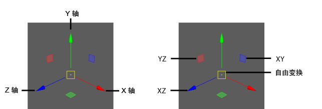

移动（也称为“平移”(translation)）将更改对象或组件的空间位置。移动相对于对象的枢轴进行。如果选择了多个对象，则根据其公用枢轴点移动，这是添加到当前选择（关键对象）的最后一个对象。对于组件，枢轴点位于所有选定组件的中心。
移动对象或组件
- 选择一个或多个对象或组件。
- 单击工具箱中的“移动工具”(Move Tool)图标
 ，或按 W 键。
，或按 W 键。
如果要先更改移动工具(Move Tool)的设置，请双击其图标，以便在“工具设置”(Tool Settings)面板中显示其选项。
- 通过以下方法使用移动操纵器，可以更改选定对象的位置：

- 拖动中心控制柄以在视图中四处自由移动。
- 拖动箭头可以沿轴移动。
- 拖动平面控制柄以沿该平面的两个轴进行移动。例如，拖动绿色的平面控制柄可沿 XZ 平面移动。
- 单击箭头或平面控制柄使其处于活动状态（黄色），然后使用鼠标中键在视图中的任意位置拖动以沿该轴或平面移动。
- 按住 Ctrl 键并单击箭头以激活其相应平面控制柄。
- 若未选择操纵器的任何部分，请按住 Shift 键并使用鼠标中键进行拖动，以便沿您在视图中拖动的方向移动。
提示： 按住 W 键并单击对象，可显示“移动工具”(Move Tool)的标记菜单。该菜单包含移动工具(Move Tool)的“工具设置”(Tool Settings)中可用的相同选项。
此外，还可以使用组合式“移动/旋转/缩放”(Move/Rotate/Scale)操纵器移动对象或组件。
若要使用精确值进行移动，请参见使用精确值移动、旋转和缩放